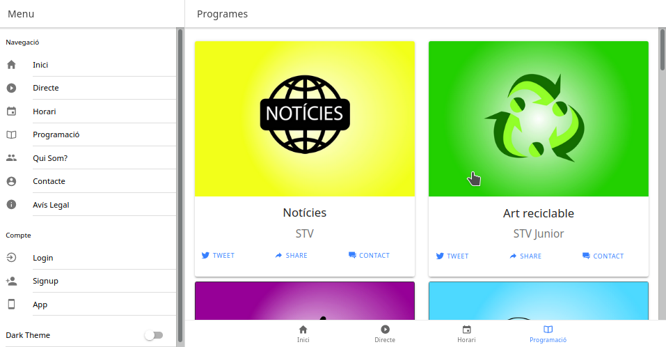
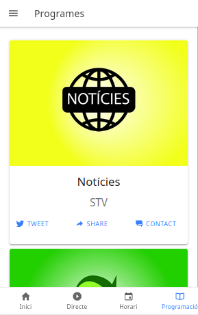

Preparar entorno desarrollo con ionic4 en KDE Neon (ubuntu 18.04)
Ejemplo de aplicación creada con ionic desde ubuntu o en mi caso derivada.
Instalamos node, android studio, ioinc y subimos a nuestro servidor con dokku.

Formato web

Formato movil
Instalación
Limpieza
sudo apt-get purge –auto-remove nodejs
sudo rm -rf /usr/local/bin/npm /usr/local/share/man/man1/node* /usr/local/lib/dtrace/node.d ~/.npm ~/.node-gyp /opt/local/bin/node /opt/local/include/node /opt/local/lib/node_modules
sudo rm -rf /usr/local/lib/node*
sudo rm -rf /usr/local/include/node*
sudo rm -rf /usr/local/bin/node*
NVM y NodeJS
sudo apt install build-essential libssl-dev
wget -qO- https://raw.githubusercontent.com/nvm-sh/nvm/v0.35.2/install.sh | bash
source .bashrc
# Buscamos la última release.
nvm ls-remote
# Instalamos.
nvm install v12.14.0
npm install -g cordova
sudo apt update
sudo apt install libc6:i386 libncurses5:i386 libstdc++6:i386 lib32z1 libbz2-1.0:i386
npm install -g ionic
Android studio.
Bajamos de https://developer.android.com/studio/
sudo mv android-studio-ide-*-linux.zip /opt/
cd /opt/
sudo unzip /opt/android-studio-ide-*-linux.zip
sudo chown -R $USER:$USER android-studio
./bin/studio.sh (ignore if you want to create a shortcut, you’ll need it)
sudo ln -sf /opt/android-studio/bin/studio.sh /bin/android-studio
sudo nano /usr/share/applications/android-studio.desktop
[Desktop Entry]
Version=1.0
Type=Application
Name=Android Studio 3.1.3
Comment=Android Studio
Exec=bash -i "/opt/android-studio/bin/studio.sh" %f
Icon=/opt/android-studio/bin/studio.png
Categories=Development;IDE;
Terminal=false
StartupNotify=true
StartupWMClass=jetbrains-android-studio
Name[en_GB]=android-studio.desktop
Install Android SDK, ‘platform-tools’ and ‘tools’
Add Android and SDK paths to your bash profile
# Set Android_HOME
export ANDROID_HOME=~/Android/Sdk
# Add the Android SDK to the ANDROID_HOME variable
export PATH=$ANDROID_HOME/platform-tools:$PATH
export PATH=$ANDROID_HOME/tools:$PATH
Install Gradle build tool, with SKDMAN
curl -s “https://get.sdkman.io” | bash
source “$HOME/.sdkman/bin/sdkman-init.sh”
Referencias
Aplicación con capacitor y react
Ejemplo:
ionic start TUAPLICACION tabs --capacitor
Seleccionamos react como tipo de proyecto.
cd TUAPLICACION
Iniciamos servidor de ionic.
ionic serve
Activar capacitor.
npx cap init TUAPLICACION TUAPLICACION.com
ionic build
En mi caso no creo el directorio www con lo cual no pude añadir la plataforma para android.
Para corregir esto modificamos el fichero capacitor.config.json cambiando la linea que especifica la carpeta.
"webDir": "public"
y en el fichero package.json añadimos una nueva linea.
"scripts": {
"start": "react-scripts start",
"build": "react-scripts build",
"test": "react-scripts test",
"eject": "react-scripts eject",
"ionic:build": "npm run build && ionic capacitor copy android" # Nueva linea
},
Volvemos a ejecutar "ionic build".
Y tendremos tanto la carpeta public como la de android.
Finalmente volvemos a cambiar el fichero "capacitor.config.json" y cambiamos "public" por "build".
Ahora ya podemos abrir la carpeta android con android-studio y crear nuestra app.
Referencia
Trabajando
Actualizar cambios.
ionic build
# Copiar cambios a las diferentes plataformas.
npx cap copy
# Sincronizar cambios.
npx cap update
Subir a dokku
Añadimos información al package.json para dokku.
"engines": {
"node": "^12.7.5",
"npm": ">= 6.13.4"
},
Desde dokku:
dokku apps:create TUAPLICACION
dokku domains:add TUAPLICACION TUAPLICACION.TUSERVIDOR.com
Añadimos repositorio de dokku.
git remote add dokku dokku@TUSERVIDOR.com:TUAPLICACION